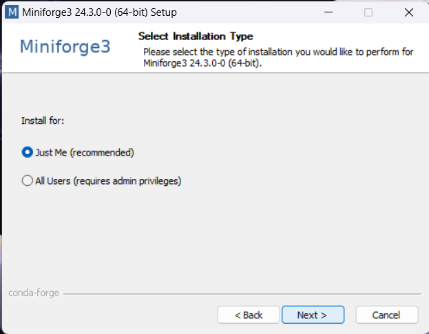
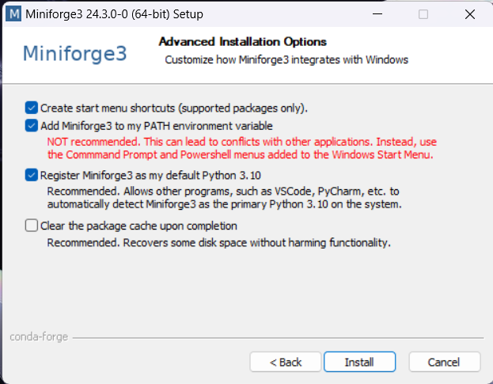

Setting up your computer#
This chapter provides instructions for setting up your computer on the first day of the training. It is recommended to install VPN as described below days before the training. In case of issues, please reach out to the training organizers.
Access to the HPC cluster#
During the training school, you will have access to the HPC infrastructure of TU Dresden to run the tutorial notebooks. To connect, you will need to set-up the TU Dresden VPN connection. It is recommended to install the eduVPN client, which is available for all major operating systems.
To set-up eduVPN, download the client for your operating system and follow the instructions provided. After the installation completes, open eduVPN, enter “Dresden” in the search bar, and click “TUD Dresden University of Technology”. A browser window will open that prompts you for a username and password. These are the credentials that have been given to you on the first day of the school. After successful login, you will be asked to confirm access for the eduVPN client (click the red button).
Once this is done, you can return to the eduVPN client and select “TUD VPN full” to route all traffic through the VPN. It may take a few seconds to establish the connection.
The HPC cluster is now accessible from: https://jupyterhub.hpc.tu-dresden.de (provide the same login credentials as for the VPN)
Setting-up your workspace#
Go to https://jupyterhub.hpc.tu-dresden.de and log in
Click the “Advanced” button
Select the cluster “barnard” and set “CPUs per task”, “Memory per CPU”, and “Runtime” according to the tutorial instructions
After being assigned a spot on the cluster, you will be greeted by a Jupyter Lab environment. Open a terminal and copy the tutorial environment into your home directory:
cp -r /data/horse/ws/s4122485-ai4seismology .Close the terminal. In the file browser on the left side, click the refresh icon and open
s4122485-ai4seismology/HPCSetup.ipynbWhen asked to “Select Kernel”, leave the default Python 3 kernel and click “Select”.
Run the first cell in the notebook to install the
ai4seis_kernel, which contains the Python environment needed to run the tutorial notebooks. If everything went well (no errors), you can close theHPCSetup.ipynbnotebook.
Steps 4+ are only required once. For subsequent tutorials, you follow steps 1-3 and continue where you left off.
Installing VPN#
#
Setting up Python and Conda environments (optional for local execution)#
NOTE: As preparation of the course you do not need to install conda and Python on your computer because everything will be installed on a HPC environment you get access to. However, in case you want to play with the tools on your own computer, just follow the installation instructions below.
When working with Python, we will make use of software libraries which need to be organized. One way of doing this, is by managing Conda environments. A conda environment can be seen as a virtual desktop, or virtual computer, accessible via the terminal. If you install some software into one Conda environment, it may not be accessible from another environment. If a Conda environment breaks, e.g. incompatible software was installed, you can just make a new one and start over.
See also
Step 1: Install Mini-forge#
Download and install Conda. We recommend the Conda distribution mini-forge.
For ease-of-use, it is recommended to install it for your use only and to add Conda to the PATH variable during installation.


Step 2: Install dependencies#
We recommend installing devbio-napari, a distribution of napari with a set of plugins for bioimage analysis.
Use this command from the terminal:
conda create --name iom25 python=3.11 pyqt scipy numpy scikit-image seaborn -c conda-forge
Afterwards, activate the environment:
conda activate iom25
Tip: It is recommended to create one environment for every project you are executing. In that way installed software libraries and tools cannot harm each other.
Step 3: Testing the installation#
Whenever you want to work on the same project, you should start a command line and enter this:
conda activate embo25
Start Jupyter lab from the terminal like this
jupyter lab
A browser will open and show you the following web page. In the section Notebook click on “Python 3 (ipykernel)” to create a new notebook:

In the new notebook, click in the first code cell, enter print("Hello world") and hit SHIFT+ENTER on your keyboard.
If everything is installed properly, it should look like this: